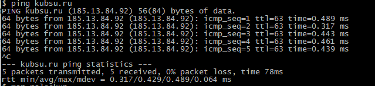
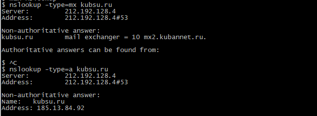
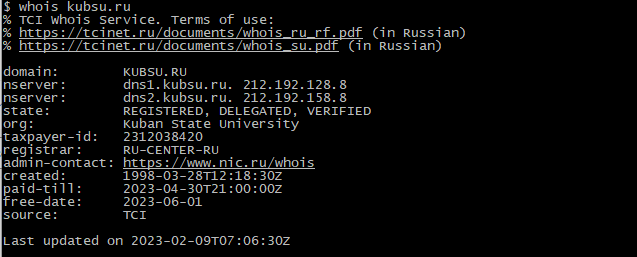
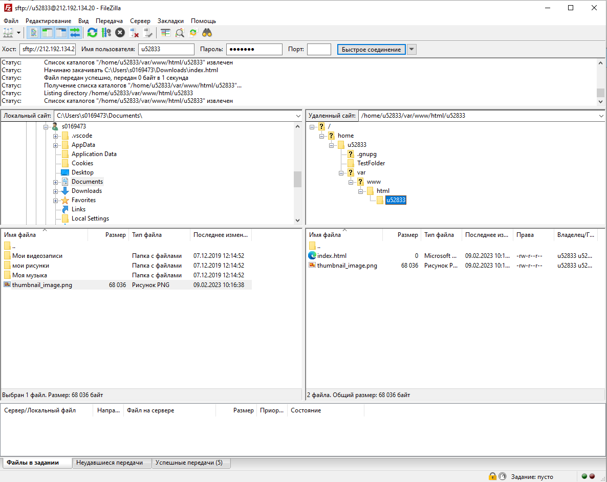

<!DOCTYPE html>
<html lang="en">
<head>
    <meta charset="UTF-8">
    <meta http-equiv="X-UA-Compatible" content="IE=edge">
    <meta name="viewport" content="width=device-width, initial-scale=1.0">
    <title>Document</title>
</head>
<body>
    <!-- 
    
    
     -->
    <div class="graph-container"></div>
    <style>
        body {
        margin: 300px auto;
        font-family: 'Lato';
        font-weight: 300;
        margin-top: 0;
        overflow: hidden;
        }

        h1 {
        text-align: center;
        margin-bottom: 200px;
        }

        svg {
        overflow: visible !important;
        }
    </style>
</body>
<script src="./deps/VivaGraphJS/dist/vivagraph.js"></script>
<script>
    var graph = Viva.Graph.graph();

    graph.addNode("session1", {url: "./terminalSession1.png"});
    graph.addNode("session2", {url: "./terminalSession2.png"});
    graph.addNode("session3", {url: "./terminalSession3.png"});
    graph.addNode("session4", {url: "./FTP_session.png"});
    graph.addNode("session5", {url: "./t1.png"});

    graph.addLink("session1", "session2", { connectionStrength: 0.1 });
    graph.addLink("session2", "session3", { connectionStrength: 0.1 });
    graph.addLink("session3", "session4", { connectionStrength: 0.01 });
    graph.addLink("session4", "session1", { connectionStrength: 0.01 });
    graph.addLink("session5", "session1", { connectionStrength: 0.01 });

    var graphics = Viva.Graph.View.svgGraphics();
    graphics.node(function(node) {
        // The function is called every time renderer needs a ui to display node
        return Viva.Graph.svg('image')
                .attr('width', 700)
                .attr('height', 700)
                .link(node.data.url); // node.data holds custom object passed to graph.addNode();
        })
        .placeNode(function(nodeUI, pos){
            // Shift image to let links go to the center:
            nodeUI.attr('x', pos.x - 250).attr('y', pos.y - 250);
        });

        var idealLength = 700;
              var layout = Viva.Graph.Layout.forceDirected(graph, {
                  springLength: idealLength,
                  springCoeff : 0.0008,
                  gravity : -10,
                  // This is the main part of this example. We are telling force directed
                  // layout, that we want to change length of each physical spring
                  // by overriding `springTransform` method:
                  springTransform: function (link, spring) {
                    spring.length = idealLength * (1 - link.data.connectionStrength);
                  }
              });

    var renderer = Viva.Graph.View.renderer(graph, {
        
        graphics: graphics,
        layout: layout,
    });
    renderer.run();
</script>
</html>
